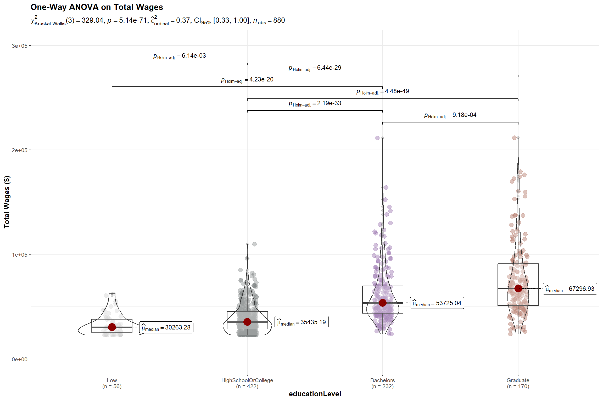
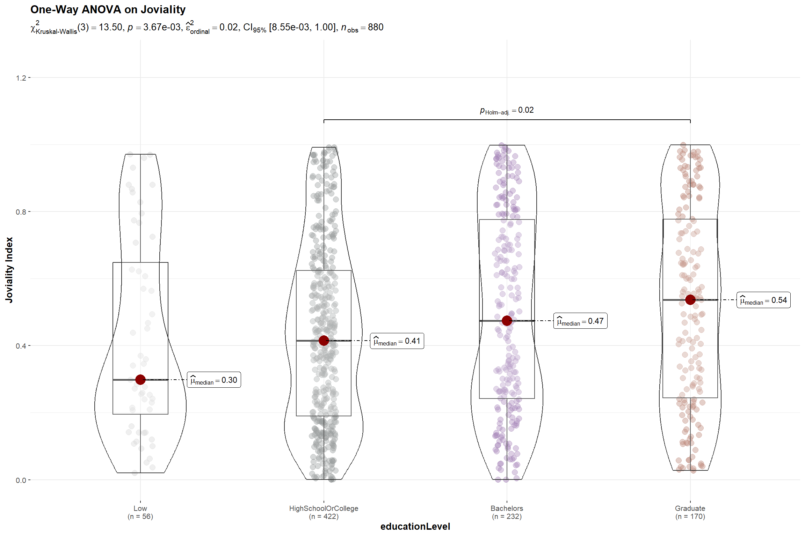
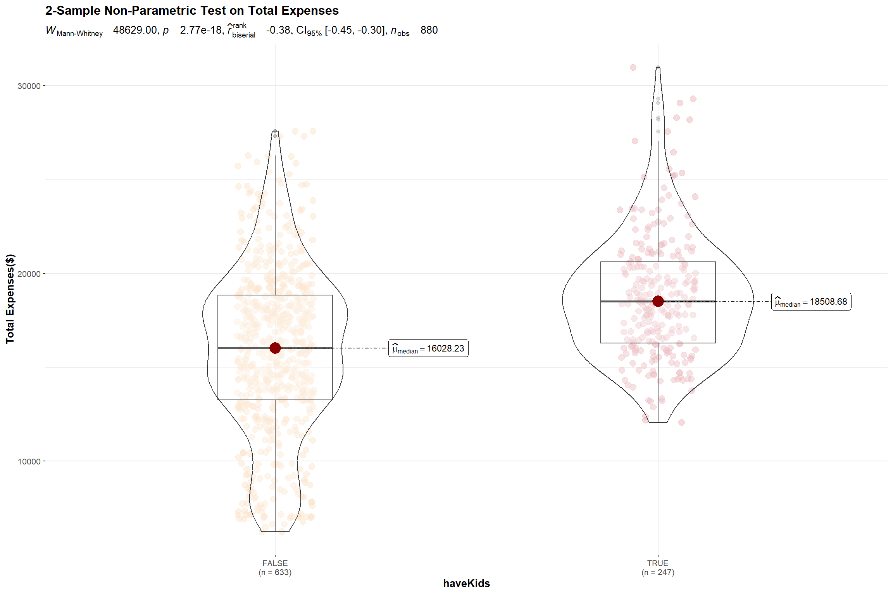
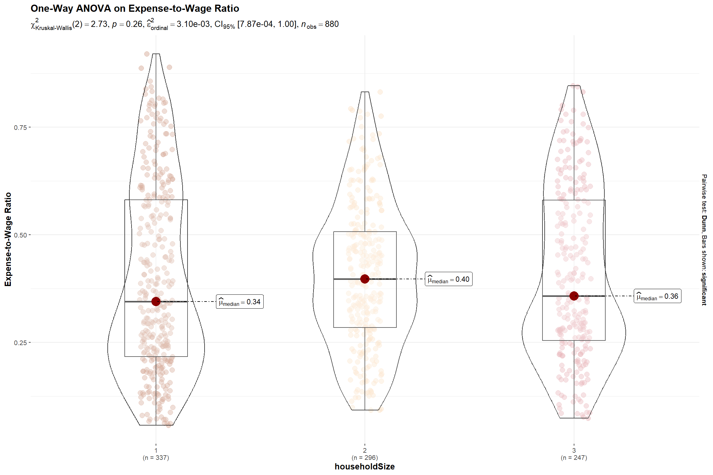

The City of Engagement: Undestanding the Demographics and Financial Characteristics of its Residents
Based on a survey of 1,011 representative residents

(First Published: May 14, 2023)
1.Overview
1.1 Setting the Scene
City of Engagement, with a total population of 50,000, is a small city located at Country of Nowhere. The city serves as a service centre of an agriculture region surrounding the city. The main agriculture of the region is fruit farms and vineyards.
The city council is in the process of preparing the Local Plan 2023. A sample survey of representative residents had been conducted to collect data related to their household demographic and spending patterns, among other things. The city aims to use the data to assist with their major community revitalization efforts, including how to allocate a very large city renewal grant they have recently received.
1.2 Our Task
We are required to create a user-friendly and interactive solution to help city managers and planners to explore the complex data in an engaging way and reveal hidden patterns.
To this end, we will apply the concepts and methods learned from Lesson 1-4 of the course to reveal the demographic and financial characteristics of the city, using appropriate static and interactive statistical graphics methods.
2.Set Up
2.1 Load the relevant packages into the R environment
We use the pacman::p_load() function to load the required R packages into our working environment. The loaded packages are:
plotly: For creating interactive web-based graphs.
ggstatsplot: For creating graphics with details from statistical tests.
ggdist: For visualising distribution and uncertainty
ggthemes: Provides additional themes for ggplot2
gridExtra: For combining multiple plots into a single plot
tidyverse: A collection of core packages designed for data science, used extensively for data preparation and wrangling.
DT: For creating interactive tables using the DataTables JavaScript library
reshape2: For transforming dataframes from one shape to another
2.2 Import the data-sets
Two data-sets are provided for this exercise:
(i) Partcipants.csv: contains information about the 1011 city residents who responded to the survey. Other than an identifier variable, we also have the household size, a boolean indicator for households having children, age, education level, interest group and joviality (or happiness) level of the respondents.
We import the records in the Participants.csv file as survey, convert the participantId, householdSize and age from numeric to integer data type, and convert educationLevel from character data type to an ordinal factor.
Show the code
# Import Participant.csv and assign it to survey variable
survey <- read_csv('data/Participants.csv', show_col_types = FALSE ) %>%
mutate(participantId = as.integer(participantId),
householdSize = as.integer(householdSize),
age = as.integer(age),
educationLevel = as.factor(educationLevel)
) %>%
mutate(educationLevel = ordered(educationLevel, levels = c("Low","HighSchoolOrCollege", "Bachelors","Graduate")))(ii) FinancialJournal.csv contains the financial transactions of the respondents from 1 Mar 2022 to 28 Feb 2023. Other than an identifier variable (which permits us to cross-reference to the participants’ demographic information), the time, nature and amount involved for the transactions were also provided.
We import the records in the FinancialJournal.csv file as financials, and convert the participantID from numeric to integer data type and round the amount values to 2 decimal point.
3.Data Wrangling
3.1 Create a month_year column for temporal analysis
There are 1.5 million financial transactions over the 12-month period and the daily information is too granular for us to analyse. We will create a month_year column, from the timestamp column, which will then allow us to aggregate the transactions by month for temporal analysis.
Show the code
# Insert a month_year column
financials <- financials %>%
mutate(month_year = format(timestamp, "%b-%Y")) %>%
mutate(month_year = as.factor(month_year)) %>%
mutate(month_year = ordered(month_year, levels = c("Mar-2022", "Apr-2022","May-2022","Jun-2022","Jul-2022","Aug-2022","Sep-2022","Oct-2022","Nov-2022", "Dec-2022","Jan-2023","Feb-2023")))3.2 Recode Rental Adjustments as part of Shelter Expense
Rent Adjustments do not occur frequently (only 131 transactions out of the 1.5 million financial transactions relate to RentAdjustment ) and they are essentially price adjustments associated with the cost of accommodation or rental refunds to the respondents.
Show the code
# Group and sumarise the transactions by category
financials_grouped <- financials %>%
group_by(category) %>%
summarise(Count = n(), Sum_of_Amt = round(sum(amount),2))
# Display the results in tabular format and highliht RentalAdjustment transactions
datatable(financials_grouped, options = list(dom='t'),
caption = "Table 1: Breakdown of Financial Journal Transactions By Category",
rownames = FALSE) %>%
formatStyle(1,
target = 'row',
backgroundColor = styleEqual(c('RentAdjustment'), c('#c7e9c0')))As such, Rent Adjustment transactions are recoded as Shelter in the financials table.
After the recoding, the new breakdown of transactions by category is as follows:
Show the code
# Make a copy of the financials table
financials_recoded <- financials
# Recode all 'RentAdjustment' transactions to 'Shelter'
financials_recoded$category <- ifelse(financials_recoded$category =='RentAdjustment','Shelter', financials_recoded$category)
# Group and sumarise the transactions by category after recoding
financials_grouped <- financials_recoded %>%
group_by(category) %>%
summarise(Count = n(), Sum_of_Amt = round(sum(amount),2))
# Display the results in tabular format and highliht Shelter transactions
datatable(financials_grouped, options = list(dom='t'),
caption = "Table 2: New breakdown of Financial Journal Transactions By Category (after recoding)",
rownames = FALSE) %>%
formatStyle(1,
target = 'row',
backgroundColor = styleEqual(c('Shelter'), c('#c7e9c0')))3.3 Remove duplicate records found in the financial data
We notice duplicate records in the financial data. For instance, a survey participant (with Id=0) has duplicate records for Education and Shelter for the same amount and timestamp.
Show the code
participant_0 <- financials_recoded[,-5] %>%
filter(participantId=='0') %>%
group_by_all() %>%
filter(n()>1) %>%
arrange_all()
datatable(participant_0, options = list(dom='t'),
caption = "Table 3: Original and Duplicate Financial Records of a Survey Participant (Id=0)",
rownames = FALSE) %>%
formatStyle(3,
target = 'row',
backgroundColor = styleEqual(c('Education'), c('#efedf5'))) %>%
formatStyle(3,
target = 'row',
backgroundColor = styleEqual(c('Shelter'), c('#9e9ac8')))Applying the duplicated() function on the financial data, we have:
[1] "1113 duplicate records."We are unsure of the reasons behind the duplicate records 😕. Nonetheless, we will use the distinct() function on the financial data to only retain unique records for our analysis.
3.4 Summarise the financial information by participants
We aggregate the financial information by participant, taking into consideration the timestamp and category using the dcast() function from reshape2 package.
After performing the following steps, we notice 131 survey participants only have transaction records for Mar-2022 , but not in the other months :
Group the transactions by participantId, pivot the information by month_year and count the number of transactions per month
Add a new column, “Months_with_trans”, which sum up the no. of months over the 12-month period where there were transactions
Perform a value count of the “Months_with_trans” column and this reveals the number of participants who only had 1 month of financial transactions.
Show the code
# Group the transactions by participantId, pivot the information by month_year and count the number of transactions per month.
financials_count <- dcast(financials_unique,
participantId ~ month_year,
value.var = "amount", fun.aggregate = length)
# Add a new column, "Months_with_trans", which sum up the no. of months over the 12-month period where there were transactions.
financials_count$Months_with_trans <- apply(financials_count[,2:13]!=0,1,sum)
# Perform a value count of the "Months_with_trans" column
summary_count <- financials_count %>%
group_by(Months_with_trans)%>%
summarise(Count=n())
datatable(summary_count, options = list(dom='t'),
caption = "Table 4: No. of Survey Participants grouped by the count of months with transactions",
rownames = FALSE) The reason for the economic activity of the 131 participants appearing only in Mar-2022 is unclear and requires further investigation. To avoid biasing our results which covers the entire year, we will remove the records of these 131 participants from our subsequent analysis.
Show the code
# List those participants who only had transaction records for 1 month and assign it id_to_exclude
ids_to_exclude <- c(financials_count[financials_count$Months_with_trans==1,]$participantId)
# Exclude from the financial_unique data-set participants whose id are in id_to_exclude list
financials_880 <- subset(financials_unique, !(participantId %in% ids_to_exclude))Next, we derive the the monthly and total wages of the 880 participants. The first 5 records of the wage information are as follow:
Show the code
wages_880 <-
dcast(subset(financials_880,(category == 'Wage')), participantId ~ month_year, value.var = "amount", sum) %>%
mutate(total_wages = rowSums(.[2:13],na.rm=TRUE))
# Inspect the first 5 records
datatable(head(wages_880, n=5), options = list(dom='t'),
caption = "Table 5: First 5 records of the Monthly and Total Wages",
rownames = FALSE) Based on Table 2 above, Education, Shelter, Food and Entertainment are all living expenses and we will also work out the monthly living expenses and the year’s total for the 880 participants. The first 5 records of the expenses information are as follow:
Show the code
expenses_880 <- dcast(subset(financials_880,!(category == 'Wage')), participantId ~ month_year, value.var = "amount", sum) %>%
mutate(total_expenses = rowSums(.[2:13],na.rm=TRUE))
# Inspect the first 5 records
datatable(head(expenses_880, n=5), options = list(dom='t'),
caption = "Table 6: First 5 records of the Monthly and Total Expenses",
rownames = FALSE) 3.5 Combine the participants’ demographic and financial data
We combine both sets of information into a single table (named as merged) and include 3 new columns:
total_surplus : refers to the amount of wage surplus (or deficit) based on the difference between total wage and total expenses for the year.
expense_to_wage: the proportion of total expenses over total wages
surplus_to_wage: the proportion of total surplus over total wages
for our subsequent analysis.
The first 5 rows of the merged table are as follow:
Show the code
merged <- survey %>%
inner_join(select(wages_880, participantId, total_wages), by = "participantId") %>%
inner_join(select(expenses_880, participantId, total_expenses), by = "participantId") %>%
mutate(total_surplus = total_wages + total_expenses,
expense_to_wage = round(abs(total_expenses/total_wages),3),
surplus_to_wage = round(total_surplus/total_wages,3)
)
datatable(head(merged, n=5), options = list(dom='t'),
caption = "Table 7: First 5 records of the Merged Demgraphic and Financial Data Table",
rownames = FALSE) 4.The demographics of the 880 participants
We will prepare a few plots to get a preliminary understanding of the profile of the 880 participants.
4.1 By Education Level
4.1.1 Breakdown on the proportion of participants by Education Level
Set a color scheme for each education level for consistency across mutliple charts
Provide informative statistics about the participants for each education level in the tooltip. The content of the tips is customized through the
aes()function within the geom_bar layer.Use
plotly()for interactivity and displaying dynamic tooltip
Show the code
edu_prop <- merged %>%
group_by(educationLevel) %>%
summarise(count = n(),
avg_age = round(mean(age),0),
avg_hh = round(mean(householdSize),1),
avg_joviality = round(mean(joviality),3)) %>%
ungroup() %>%
mutate(proportion = count/sum(count))
# Set a color scheme for Education Level analysis for consistency
colors <- c('#CCCCCC', '#808585', '#9067a7', '#ab6857')
edu_col <- ggplot(edu_prop,aes(x = educationLevel, y = proportion, fill=educationLevel) ) +
geom_bar(stat = "identity",
aes(text = paste("Education Level:", educationLevel,
"<br>Count:", count,
"<br>Proportion:", round(proportion*100,1), '%',
"<br>Average Age:",avg_age,
"<br>Average Household Size:", avg_hh,
"<br>Average Joviality:", avg_joviality))) +
labs(x = "Education Level",
y = "Proportion",
title = "93.6% of Participants receive College or Higher Level Education",
subtitle = "Most participants surveyed are literate") +
# Set y-axis range from 0 to 0.50
scale_y_continuous(limits = c(0, 0.50)) +
theme_minimal() +
theme(legend.position = "none") +
scale_fill_manual(values = colors)
ggplotly(edu_col, tooltip = 'text')From the above, we observe that majority of the participants have at least high school or college education. High literacy rate often correlates with higher knowledge-based economy and greater interest for cultural and intellectual activities. As we mouse over each column, we notice the following:
Average age across all education levels ranges from 38-40 years old
Average household size is around 2 persons
Higher degree of joviality seems to be associated with higher education level.
4.1.2 Distribution of total wages for the year by Education Level
With survey data, it’s useful to check the distribution of the data points for total wage and total expenses to get an intuition of how they differ for each education level.
stat_halfeye()function is used to create half-density distribution for every education levelA boxplot, created using
geom_boxplot(), shows the median and mean values on the chart to complements the analysisThe x- and y- axes are switched around using the
coord_flip()as it is easier to compare values horizontallyThe
stat_summary()function is used to add the marker for mean and text labels for median and mean values onto the chart
Show the code
ggplot(merged,
aes(x = educationLevel,
y = total_wages)) +
stat_halfeye(aes(fill=educationLevel),
adjust = 1.0,
justification = -0.2,
.width = 0,
point_colour = NA) +
geom_boxplot(width = .20,
outlier.shape = NA,
alpha=0.5) +
coord_flip() +
theme_minimal() +
# Add geom_text layer for displaying median values
stat_summary(fun = median, geom = "text", aes(label = round(after_stat(y), 0)),
position = position_nudge(x = 0.15), vjust = -0.5,size=3) +
# Add geom_text layer for displaying mean dot in red
stat_summary(fun = mean, geom = "point", shape = 16, size = 3, color = "#B00000",
position = position_nudge(x = 0.0)) +
# Add geom_text layer for displaying mean values in red
stat_summary(fun = mean, geom = "text", aes(label = round(after_stat(y), 0)),
position = position_nudge(x = 0.15), vjust = 4, color = "#B00000",size=3) +
scale_fill_manual(values = colors) +
theme(legend.position = "none") +
scale_y_continuous(limits = c(0, 125000)) +
labs(x = "Education Level",
y = "Total Wages for the Year($)",
title = "Participants who receive tertiary education earn considerably more",
subtitle = "\n(Black fonts: Median Wage; Red fonts: Mean Wage)") It’s not surprising that the distribution of wages across all education levels are left-skewed. However, it’s worth noting that the wage distribution of participants who have tertiary education appear to be more evenly distributed than those who only receive College or lower education.
4.1.3 Distribution of total expenses for the year by Education Level
With more income, does it mean that participants with tertiary education would spend more? Let’s find out!
Show the code
ggplot(merged,
aes(x = educationLevel,
y = abs(total_expenses))) +
stat_halfeye(aes(fill=educationLevel),
adjust = 1.0,
justification = -0.2,
.width = 0,
point_colour = NA) +
geom_boxplot(width = .20,
outlier.shape = NA,
alpha = 0.5) +
# stat_dots(side = "left",
# justification = 1.2,
# binwidth = .5,
# dotsize = 1.5) +
# Add'l codes from the previous plot
coord_flip() +
theme_minimal() +
# Add geom_text layer for displaying median values
stat_summary(fun = median, geom = "text", aes(label = round(after_stat(y), )),
position = position_nudge(x = 0.15), vjust = -0.5,size=3) +
# Add geom_text layer for displaying mean dot in red
stat_summary(fun = mean, geom = "point", shape = 16, size = 3, color = "#B00000",
position = position_nudge(x = 0.0)) +
stat_summary(fun = mean, geom = "text", aes(label = round(after_stat(y), 0)),
position = position_nudge(x = 0.15), vjust = 4, color = "#B00000",size=3) +
scale_fill_manual(values = colors) +
theme(legend.position = "none") +
labs(x = "Education Level",
y = "Total Expenses for the Year($)",
title = "Participants Across All Education Levels Spend\nbetween $15k and $17.5k on average",
subtitle = "\n(Black fonts: Median Expenses; Red fonts: Mean Expenses)") The gap in expenses between the tertiary and non-tertiary educated participants is not as wide as their wages.
4.2 By Household Size and Kids
Let’s check out some basic statistics on household size.
4.2.1 Breakdown on the proportion of participants by Household Size
Show the code
# Set a color scheme for Household Size Level analysis for consistency
colors2 <- c('#CC9881', '#FADFC1', '#E3A6AB', '#A87B9F')
hh_table <- merged %>%
group_by(householdSize,haveKids) %>%
summarise(count = n(),
avg_age = round(mean(age),0),
avg_joviality = round(mean(joviality),3)) %>%
ungroup() %>%
mutate(proportion = round(proportions(count),2)) %>%
select(householdSize,haveKids,count,proportion,avg_age,avg_joviality) %>%
mutate(householdSize = as.factor(householdSize))
hh_bar <- ggplot(hh_table,aes(x = householdSize, y = proportion, fill=householdSize) ) +
geom_bar(stat = "identity",
aes(text = paste("Household Size:", householdSize,
"<br>Have Kids:", haveKids,
"<br>Count:", count,
"<br>Proportion:", round(proportion*100,1), '%',
"<br>Average Age:",avg_age,
"<br>Average Joviality:", avg_joviality))) +
labs(x = "Household Size",
y = "Proportion",
title = "Fairly Proportionate Household Size with 1 to 3 Members",
subtitle = "") +
# Set y-axis range from 0 to 0.40
scale_y_continuous(limits = c(0, 0.4)) +
theme_minimal() +
theme(legend.position = "none") +
scale_fill_manual(values = colors2)
ggplotly(hh_bar, tooltip = 'text')From the above, we observe that household size is small and the distribution of family sizes is also fairly proportionate, with about one-third of households having 1, 2 or 3 members each. As we mouse over the each column, we notice the following:
Only households with the size of 3 have kids
Joviality appears to be declining as the household size increases from 1 to 3
Similar to the split by education level, average age of participants across different household sizes ranges from 38 to 40 years old. This indicates that the age of participants in the survey is likely to be uniformly or normally distributed.
4.2.2 Distribution of total wages for the year by Household Size
Let’s examine the distribution of the participants’ wages across different household sizes.
Show the code
ggplot(merged %>%
mutate(householdSize = as.factor(householdSize)),
aes(x = householdSize,
y = total_wages)) +
stat_halfeye(aes(fill=householdSize),
adjust = 1.0,
justification = -0.2,
.width = 0,
point_colour = NA) +
geom_boxplot(width = .20,
outlier.shape = NA,
alpha=0.5) +
coord_flip() +
theme_minimal() +
# Add geom_text layer for displaying median values
stat_summary(fun = median, geom = "text", aes(label = round(after_stat(y), 0)),
position = position_nudge(x = 0.15), vjust = -0.5,size=3) +
# Add geom_text layer for displaying mean dot in red
stat_summary(fun = mean, geom = "point", shape = 16, size = 3, color = "#B00000",
position = position_nudge(x = 0.0)) +
# Add geom_text layer for displaying mean values in red
stat_summary(fun = mean, geom = "text", aes(label = round(after_stat(y), 0)),
position = position_nudge(x = 0.15), vjust = 4, color = "#B00000",size=3) +
scale_fill_manual(values = colors2) +
theme(legend.position = "none") +
scale_y_continuous(limits = c(0, 125000)) +
labs(x = "Household Size",
y = "Total Wages for the Year($)",
title = "Participants from Larger Houesholds Tend to Earn More",
subtitle = "\n(Black fonts: Median Wage; Red fonts: Mean Wage)") While larger households earn more, it is interesting to note that the average wage for 2- and 3-member households are comparable.
4.2.3 Distribution of total expenses for the year by Household Size
Let’s also find out if the participants from bigger households spend more as well.
Show the code
ggplot(merged %>%
mutate(householdSize = as.factor(householdSize)),
aes(x = householdSize,
y = abs(total_expenses))) +
stat_halfeye(aes(fill=householdSize),
adjust = 1.0,
justification = -0.2,
.width = 0,
point_colour = NA) +
geom_boxplot(width = .20,
outlier.shape = NA,
alpha = 0.5) +
coord_flip() +
theme_minimal() +
# Add geom_text layer for displaying median values
stat_summary(fun = median, geom = "text", aes(label = round(after_stat(y), )),
position = position_nudge(x = 0.15), vjust = -0.5,size=3) +
# Add geom_text layer for displaying mean dot in red
stat_summary(fun = mean, geom = "point", shape = 16, size = 3, color = "#B00000",
position = position_nudge(x = 0.0)) +
stat_summary(fun = mean, geom = "text", aes(label = round(after_stat(y), 0)),
position = position_nudge(x = 0.15), vjust = 4, color = "#B00000",size=3) +
scale_fill_manual(values = colors2) +
theme(legend.position = "none") +
labs(x = "Household Size",
y = "Total Expenses for the Year($)",
title = "Participants from Larger Houesholds Tend to Spend More As Well",
subtitle = "\n(Black fonts: Median Expenses; Red fonts: Mean Expenses)") Similar to the observation for wages, 2- and 3- member households average spend is close to each other.
4.3 Overall Age Distribution
Earlier on, we observed that the average age of participants ranges from 38-40 regardless of whether we slice the data by Education Level or Household Size. Visualising the age distribution of the participants would give us a sense of whether the population of the city is growing or ageing, which in turn has a social and economic implications to the city’s development.
- Apply a simple design so that we focus on appreciating the “shape” of the distribution and get the “big” picture first.
ggplotly()is used to provide interactivity and details on the data.
Show the code
age_dist <- ggplot(data=merged,
aes(x= age)) +
geom_histogram(binwidth = 5,
color="black",
fill='lightgray',
linewidth = 0.1) +
xlim(c(15, 60)) +
ylim(c(0,150)) +
geom_vline(aes(xintercept=mean(age)),
color="red",
linetype="dashed",
size=1) +
geom_vline(aes(xintercept=median(age)),
color="grey30",
linetype="dashed",
size=1) +
xlab('Age') +
ylab('Count') +
ggtitle("Slow Population Growth in the City") +
theme_minimal()
ggplotly(age_dist)The relatively flat distribution for the age histogram above indicates slow population growth in the city, with the residents just reproducing enough to replace itself. Nonetheless, we have to check the survey’s participant identification criteria to ensure that the result above is not due to selection bias.
4.4 Overall Distribution of Joviality Index
It is meaningful to assess the sentiments of the 880 participants who have been around in the past year, as this provides valuable insights into the well-being and quality of life of the participants. The joviality measure can be used to identify factors that contribute to happiness, thus allowing city planners to prioritise resources in areas that have a positive impact on residents’ well-being.
Show the code
joviality_dist <- ggplot(data=merged,
aes(x= joviality)) +
geom_histogram(bins = 20,
color="black",
fill='lightgray',
linewidth = 0.1) +
geom_vline(aes(xintercept=mean(joviality)),
color="red",
linetype="dashed",
size=1) +
geom_vline(aes(xintercept=median(joviality)),
color="grey30",
linetype="dashed",
size=1) +
xlab('Joviality Index') +
ylab('Count') +
ggtitle("The 880 Pariticipants are Moderately Unhappy 😐") +
theme_minimal()
ggplotly(joviality_dist)We can see that distribution of the joviality index is left-skewed and both the median and mean index values are at 0.44 and 0.47 respectively. This indicates that those surveyed are not too pleased with their quality of live in the city and it is worth investigating the factors that influence the index.
How about the 131 survey participants who were only around in Mar 2022? Did they leave because they were unhappy too?
Let’s do a similar plot for them as well.
Show the code
joviality_dist_131 <- ggplot(data = survey %>%
# Include this line to retrieve the records of the missing 131 participants
filter(participantId %in% ids_to_exclude),
aes(x = joviality)) +
geom_histogram(bins = 20,
color = "black",
fill = 'lightgray',
linewidth = 0.1) +
geom_vline(aes(xintercept = mean(joviality)),
color = "red",
linetype = "dashed",
size = 1) +
geom_vline(aes(xintercept = median(joviality)),
color = "grey30",
linetype = "dashed",
size = 1) +
xlab('Joviality Index') +
ylab('Count') +
ggtitle("The 131 Missing Participants were Happier!!😕 ") +
theme_minimal()
ggplotly(joviality_dist_131)Surprisingly, the median and mean joviality index of the 131 participants who went “missing” after Mar 2022 is much higher. It’s definitely worth taking a deeper look into why this group of participants was happier.
5.Validating the Joviality and Financial Health of the Participants
Given that we are dealing with survey results, we will next conduct Confirmatory Data Analysis (CDA) to test and confirm some of the noteworthy observations from the previous section.
5.1 Whether a higher education qualification results in more wages
Before we start validating our hypotheses, we will develop a function that will help us visualise if the data is normally distributed using a Quantile-Quantile (QQ) Plot. At the same time, we also want to conduct a Shapiro-Wilk Test for Normality to confirm that the data points really follow a normal distribution. The function will make the repetitive task of generating a normality test result for each data set easier.
Accept inputs for a dataframe, categorical variable and a continuous measure that we will be applying the normality test on.
Accept inputs for the plot title and y-axis label.
Convert non-categorical variable into one that is categorical and also obtain the unique values of the variable
Draw a QQ plot based on the inputs
Compute the p-value for the Shapiro-Wilk Test and indicate if the data set is normally distributed based on the significance level of 0.05.
Annotate the Shapiro-Wilk Test result on the top-left of the QQ Plot . To reduce clutter, it is sufficient to just show the p-value and the test outcome on the plot
Arrange all output plots in 2 columns
Show the code
normality_test <- function(df,
column,
measure,
title,
ylabel) {
category <- if (is.factor(df[[column]])) {
levels(df[[column]])
} else if (is.character(df[[column]])) {
sort(unique(df[[column]]))
} else {
sort(unique(as.character(df[[column]])))
}
plots <- list()
color_counter <- 1
for (class in category) {
subset_df <- filter(df, !!sym(column) == class)
shapiro_res <- shapiro.test(subset_df[[measure]])
p_value <- format(shapiro_res$p.value, digits = 3)
is_normal <- ifelse(shapiro_res$p.value > 0.05, "Yes", "No")
g <- ggplot(subset_df, aes(sample = !!sym(measure))) +
stat_qq() +
stat_qq_line() +
ggtitle(paste(title, class)) +
xlab(paste(column,':',class)) +
ylab(ylabel) +
theme_light() +
annotate("label", x = -0.5, y = Inf, hjust = 1, vjust = 1.5,
label = paste("Shapiro-Wilk Normality Test:", "\n",
"p-value = ", p_value, "\n",
"Is normal distn? ", is_normal),
fill = "white"
)
plots[[class]] <- g
}
grid.arrange(grobs = plots, ncol = 2)
}Step1: For the Shapiro-Wilk Test, we hypothesize,
- H0 = The data is normally distributed at 0.05 level of significance
We run the function by providing the relevant parameters:
df : merged
column: ‘educationLevel’
measure: ‘total_wages’
title: “Normality Test on Total Wages’
ylabel: ‘Total Wages ($)’
Show the code
The results confirm that we can’t assume Normality for the data and we will proceed to apply a non-parametric test to check if the participants’ wages are different based on their education level.
Step 2: For the nonparametric Kruskal-Willis Test, we hypothesize,
- H0 = There is no difference between the median total wage of the participants with different education level at 0.05 level of significance.
Set a non-parametric test
Enable pairwise comparison and only display significant results
Disable the display of Bayes Factor to reduce clutter
Enable notch and set notch width since we are using Median
Show the code
set.seed(123)
# Use a color scheme for Education Level analysis for consistency
colors <- c('#CCCCCC', '#808585', '#9067a7', '#ab6857')
ggbetweenstats(
data = merged,
x = educationLevel,
y = total_wages,
type = "np",
pairwise_comparisons=TRUE,
pairwise.display = "s",
bf.message = FALSE,
notch = TRUE,
notchwidth = 0.1,
ylab = "Total Wages ($)",
title = "One-Way ANOVA on Total Wages ",
messages = FALSE
) +
scale_color_manual(values = colors) +
scale_y_continuous(limits = c(0, 300000))
The p-value of the Kruskal-Willis Test is < 0.05 and there is a statistically significant difference in total wages. This is further supported by the pairwise comparison of total wages between the education levels which shows significant differences in their wages among all levels.
With the above, we reject the null hypothesis and conclude that there is sufficient statistical evidence that the wages of participants with different education levels are different.
5.2 Whether participants with higher education qualification are happier
While participants with higher education qualification receive more wages, does a better academic qualification translate to happiness?
Step1: For the Shapiro-Wilk Test, we hypothesize,
- H0 = The Joviality Index data for each Education Level is normally distributed at 0.05 level of significance
Show the code
The results confirm that we can’t assume Normality for the data and we will proceed to apply a non-parametric test.
Step 2: For the nonparametric Kruskal-Willis Test, we hypothesize,
- H0 = There is no difference between the median joviality index of the participants with different education level at 0.05 level of significance.
Show the code
set.seed(123)
ggbetweenstats(
data = merged,
x = educationLevel,
y = joviality,
type = "np",
pairwise_comparisons=TRUE,
pairwise.display = "s",
bf.message = FALSE,
notch = TRUE,
notchwidth = 0.1,
ylab = "Joviality Index",
title = "One-Way ANOVA on Joviality",
messages = FALSE
) +
scale_color_manual(values = colors) +
# Increase the ylim > 1.0 so that the pairwise results can be displayed
scale_y_continuous(limits = c(0, 1.25))
Although ANOVA test result show a p-value < 0.005 indicating that there is a difference in joviality among participants with different education levels and permitting us to reject the null hypothesis, this is mainly attributed to the significant difference between the joviality of participants who attended high school and graduate school.
5.3 Whether having children result in higher expenditure
This is a follow-up to the observation in Section 4.2 where we noticed households with kids have higher expenditures. We will proceed to validate this observation.
Step1: For the Shapiro-Wilk Test, we hypothesize,
- H0 = The total expenses for households with and without kids is normally distributed at 0.05 level of significance
Show the code
The results confirm that we can’t assume Normality for the data and we will proceed to apply a non-parametric test for the 2 samples.
Step 2: For the non-parametric Mann-Whitney Test, we hypothesize,
- H0 = There is no difference between the total expenses for households with and without kids at 0.05 level of significance.
Show the code
set.seed(123)
# Set a color scheme for Household Size Level analysis for consistency
colors2 <- c('#FADFC1', '#E3A6AB', '#A87B9F')
ggbetweenstats(
data = merged %>%
mutate(total_expenses = abs(total_expenses)),
x = haveKids,
y = total_expenses,
type = "np",
pairwise_comparisons=TRUE,
pairwise.display = "s",
bf.message = FALSE,
notch = TRUE,
notchwidth = 0.1,
ylab = "Total Expenses($)",
title = "2-Sample Non-Parametric Test on Total Expenses",
messages = FALSE
) +
scale_color_manual(values = colors2) 
The test results reveal that there is indeed a significant difference between the total expenses of participants who have kids and those who don’t and we will reject the null hypothesis.
Expenses are made up of Education, Shelter, Food and Recreation. We will dive deeper to understand which of these expense types resulted in the significant difference in the expenditure of the 2 groups.
To do this, we have to first extract the individual expenses items of the 880 participants for the year before charting an interval plot by expense type.
For each expense item, we want to compare the spent by households with and without kids. To place each pair of interval lines together, we have to set the fill argument of the aes() function to the haveKids attribute, and set the position argument in the stat_pointinterval() function to ’position_dodge()’.
Set point_interval argument as median quartile since data is not normally distributed
Align the color scheme with the previous plot by setting the values argument within the scale_fill_manual() function for consistency.
Show the code
# Extract the individual expenses items of the 880 participants for the year
expenses_by_id_category <- financials_880 %>%
filter(category != 'Wage') %>%
group_by(participantId, category) %>%
summarise(total_spent = sum(abs(amount))) %>%
inner_join(select(survey, participantId, haveKids), by = "participantId")
# Prepare the interval plot
p<- expenses_by_id_category %>%
ggplot(aes(category, total_spent,fill=haveKids)) +
stat_pointinterval(
aes(interval_color = stat(fill)),
position = position_dodge(),
point_interval = median_qi,
.width = 0.95,
show.legend = TRUE
) +
ylab("Total Spent ($)") +
xlab("Expense Category") +
theme_minimal() +
# Align the color scheme with the previou plot
scale_fill_manual(
values = c("#FADFC1", "#E3A6AB"),
labels = c("FALSE", "TRUE"),
guide = guide_legend(title = "haveKids"),
aesthetics = "interval_color") +
#Title, subtitle, and caption
labs(title = 'Visualising Uncertainty in Median Spend of Participants by Expense Type',
subtitle = '95% Quantiles intervals of median spend between participants With and WithOut kids') +
theme(plot.title = element_text(face = "bold", size = 14),
plot.subtitle = element_text(size = 10),
legend.position = "top")
pBased on the interval plot above, we see that all participants (with and without kids) have overlapping interval lines for food, recreation and shelter, indicating there is uncertainty on whether this is a significant difference in the median spend at 95% quantile for the 2 groups of participants on the 3 expense types.
It is also apparent that the spending on education , probably for the kids, is an expense item that participants without kids do not have to incur.
5.4 Whether bigger households face a higher burden in cost of living
We will use the total expense to total wage ratio as a proxy measure for the cost of living in the city.
Step1: For the Shapiro-Wilk Test, we hypothesize,
- H0 = The expense-to-wage ratio for different household sizes is normally distributed at 0.05 level of significance
Show the code
Since we cannot assume Normality for the data based on the results of Step 1, we will apply non-parametric test to test the significance of the difference.
Step 2: For the nonparametric Kruskal-Willis Test, we hypothesize,
- H0 = There is no difference between the expense-to-wage ratio of the participants with different household size at 0.05 level of significance.
Show the code
set.seed(123)
# Set a color scheme for Household Size Level analysis for consistency
colors2 <- c('#CC9881', '#FADFC1', '#E3A6AB', '#A87B9F')
ggbetweenstats(
data = merged,
x = householdSize,
y = expense_to_wage,
type = "np",
pairwise_comparisons=TRUE,
pairwise.display = "s",
bf.message = FALSE,
notch = TRUE,
notchwidth = 0.1,
ylab = "Expense-to-Wage Ratio",
title = "One-Way ANOVA on Expense-to-Wage Ratio",
messages = FALSE
) +
scale_color_manual(values = colors2) 
The p-value is > 0.05 indicating that there is insufficient evidence to reject the null hypothesis that the cost-to-wage ratio for larger households are different. Hence, we can also infer that even though we noticed families with kids incur higher expenses in Section 5.3, generally, the residents of these bigger households will earn more to defray the higher cost of living.
6.Conclusion
Through this exercise, we demonstrated how interactive and statistical plots can help us understand and analyse the survey data.
We explored the data in Section 4 using various visualisations to understand the distribution, relationships, and patterns in the data. We found that higher education level and bigger household size are associated with higher income and expenditure, the city has a low population growth rate, and the residents have a moderate level of happiness. We also performed statistical tests to confirm some of these findings and hypotheses. The analysis presented here is not exhaustive, but it should give city managers and planners a good overview of the demographic and financial situation of the city.
7.Reference
How to conduct and visualise Kruskal-Wallis Test
How to conduct 2-sample t-test
How to perform Normality Test Assumption for ANOVA
Michael Djohan’s VAA course webpage